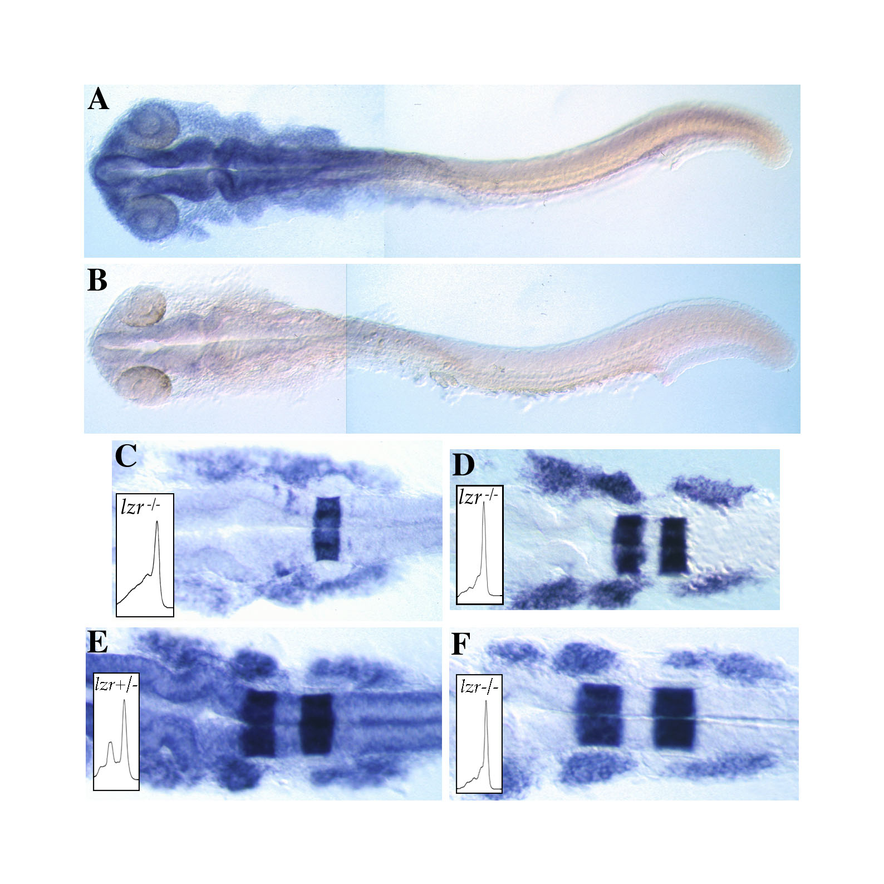

The Zebrafish Science Monitor, Vol. 7 (1) |
By C.B. Moens, Division of Basic Science, Fred Hutchinson Cancer Research Center, Seattle WA 98109-1024. cmoens@fhcrc.org
With the revelations of the recent zebrafish meeting, to date about 50 chemically-induced mutant loci have been cloned, either positionally or by candidate gene approaches. In many cases, analysis of the expression of these cloned genes has revealed strongly reduced levels of mutant mRNA in homozygous mutant embryos. This observation is often interpreted as suggesting that in wild-type embryos the gene is under positive autoregulatory control, whether direct or indirect. However this has not been directly demonstrated to be the case, and alternative explanations for the loss of mutant transcripts exist.
|  |
| Figure 1. A,B: lzr/pbx4 is expressed broadly and at high levels in wild-type embryos at 24 hours (A), but expression is strongly reduced in lzr- embryos at the same stage (B). C,D: lzr- embryos have reduced expression of krox20 in r3, and fused streams of dlx2 expression in the migrating cranial crest (C). These phenotypes are rescued by injection of full-length lzr+ mRNA at the 1-cell stage (D). Insets show PCR-dHPLC genotyping: one peak indicates a lzr-/- genotype, two peaks a lzr+/- genotype. E,F: RNA in situs using three digoxigenin-labelled probes, krox20, dlx2 and lzr/pbx4 demonstrate that rescue of the lzr- phenotype does not prevent elimination of lzr- mRNA. Thus a genotypically heterozygous embryo (E) exhibits broad expression of lzr/pbx4, while a genotypically mutant embryo (F) that has been rescued as in (D) nevertheless eliminates its lzr- mRNA. |
We recently identified the zebrafish pbx family member pbx4 as being mutated in lazarus mutant embryos (Pöpperl et al., in press). When we observed that in lzr- embryos the levels of pbx4 mRNA was substantially reduced (Fig. 1 A,B), we decided to test directly whether the lack of up-regulation of the mutant transcript was due to the loss of autoregulatory input. In lzr- embryos, krox20 expression in r3 is reduced and dlx2 expression in the neural crest fails to be subdivided into three streams corresponding with the first three pharyngeal arches (Fig. 1C). Injection of full-length pbx4 mRNA rescues both of these aspects of the lzr- phenotype (Fig. 1D), while injection of mutant pbx4 mRNA does not (Fig. 1C).
In order to test the autoregulation hypothesis, we rescued lzr- embryos by injection of an mRNA encoding full-length pbx4 in which the pbx4 3'UTR was replaced with the SV40 polyadenylation signal. We then performed RNA in situ hybridizations on these injected embryos at 18 hpf using krox20 and dlx2 to assay rescue of the lzr- phenotype, and a probe generated from the pbx4 3'UTR to detect the levels of endogenous pbx4 mRNA. While 100% (n=48) of injected embryos were phenotypically wild-type with respect to krox20 and dlx2, we could readily identify two classes of embryos with respect to pbx4 expression. The first class, comprising 73% of injected embryos, had normal levels of pbx4 mRNA (Fig. 1E). The second class (27% of injected embryos) had undetectable levels of endogenous pbx4 mRNA (Fig. 1F). Subsequent genotyping of these embryos by denaturing HPLC demonstrated that the latter class were the lzr- embryos (Fig. 1E,F insets). Thus endogenous pbx4 mRNA fails to be up-regulated in lzr- embryos regardless of the presence of rescuing wild-type Pbx4 protein.
This experiment demonstrates that a mechanism other than the loss of autoregulatory input is primarily responsible for the loss of mutant pbx4 mRNA in lzr- embryos. A process called nonsense-mediated mRNA decay, whereby the cell recognizes and eliminates mRNAs encoding truncated proteins, has been described in yeast, C. elegans and in humans (Hentze and Kulozik, 1999; Culbertson, 1999). While the molecular genetics of this process are just beginning to be elucidated, its adaptive nature is easy to imagine, as it protects the cell from expressing potentially deleterious dominant-negative forms of proteins. The C-to-T mutation in pbx4 responsible for the lzr- phenotype generates a premature stop codon that truncates the Pbx4 protein after 45 amino acids, making this mutant message a prime candidate for being a target of nonsense-mediated RNA decay in the zebrafish. This analysis raises the possibility that mutant mRNAs encoding truncated proteins in other zebrafish mutants may similarly be targets for nonsense mediated decay.
References:
Pöpperl H., Rikhof, H., Chang, H., Haffter, P., Kimmel, C.B., and Moens, C.B. (2000). lazarus is a novel pbx gene that globally mediates hox gene function in zebrafish. Mol. Cell, in press.
Hentze, M.W., Kulozik, A.E. (1999) A perfect message: RNA surveillance and nonsense-mediated decay. Cell 96:307-10.
Culbertson, M.R. (1999) RNA surveillance. Unforeseen consequences for gene expression, inherited genetic disorders and cancer. Trends Genet. 15: 74-80.
For any large colony of fish, precautions should be taken to prevent the introduction and spread of disease. The easiest strategy for combating disease is to ensure good water quality and strict sanitation and quarantine procedures.
General Procedures:
- Minimize transfer of fish and water between tanks as much as possible.
- Periodically sterilize all equipment that comes in contact with fish or tanks.
- Use fishnets, siphons, and cleaning sponges in only one tank at a time and autoclave or sanitize them before using them in a different tank.
- Water sterilization (e.g. ultra-violet, ozone, sub-micron filtration) is recommended in recirculating systems.
- Monitor water quality parameters routinely.
- Remove sick and dead fish from tanks to minimize disease carriers and avoid cannibalism.
- Optimize general husbandry practices (nutrition, stress, stocking density, etc.).
- Quarantine all fish from outside sources and bring only properly sanitized embryos into the colony. A procedure for sanitizing the embryos with bleach solution is described below.
Quarantine Procedures
Fish brought in from the outside world (i.e. not born in your facility) must be isolated in a quarantine area to reduce the risk of contamination of existing stocks with infectious diseases. The ideal quarantine area is a room completely separated from the main fish facility and on a separate flow-through water system. Depending on the size and arrangement of your facility this may or may not be practical. Small facilities can use individual aquaria or static tanks in a designated area of the facility. In either case, procedures should be designed and implemented to prevent the spread of diseases from the quarantine area.
- Fish that were not born in the facility, that have had an out-of-facility experience, or that have been in contact with fish from outside of the facility should never enter or return to the main fish facility. Quarantine these fish.
- Examine all incoming fish to the quarantine area for signs of disease. If the fish have any illness or are coming from a facility with known disease problems, treat them (if possible).
- Observe fish in quarantine for a minimum of two weeks prior to breeding. If fish show signs of disease within this period, treat or euthanize them, depending on the value of the particular fish. Dispose of dead fish in a manner that will not contaminate the main facility.
- Never move live fish out of the quarantine area unless they leave the building entirely. Only surface-sanitized embryos obtained from the fish in the quarantine area can be transferred into the main facility (see Embryo Bleaching Procedure below)
- Bleach or autoclave all equipment leaving the quarantine area. Transport, clean, and store quarantine room equipment in containers that are kept separate from the central facility. Label these containers clearly.
- Consider everything in the quarantine area contaminated, including personnel. Wash your hands and arms thoroughly after working in the area.
Embryo Bleaching Procedure
1. Prepare the bleach solution: 100 Fl (0.1 ml) of bleach in 170 ml of clean system water. Mixing it up ahead of time guarantees that the bleach is evenly dispersed. The bleach we use is 5% sodium hypochlorite (NaOCl) from Baker (Order No. 9416-01; 5.3% available chlorine; PO4 <0.0005%; Ca <0.001%). The use of chemically pure sodium hypochlorite is recommended. Some inexpensive brands of bleach contain contaminants or additives that are potentially toxic to embryos.
2. Place the embryos in a clean dish, remove the water they are in and add the bleach solution, or use a pipette to add the embryos to the bleach solution in a small volume of water.
3. Gently swirl the embryos in the bleach solution and allow them to stand for 5 minutes.
4. Rinse the embryos two to three times in sterile system water and transfer the eggs to a clean disposable petri dish.
5. The bleaching procedure can be repeated if desired.
6. There are many opinions regarding the timing of the bleaching procedure for optimal survival. Some people bleach the embryos within several hours of fertilization (3-8 h), others wait until epiboly is complete (10 h) and still others wait until they are 24-36 h. In general, we recommend bleaching the embryos within the first day. Bleaching toughens the chorion to the point that fish may not be able to hatch. Because of this, the chorion should be removed either mechanically or with pronase treatment prior to normal hatching.
7. Embryos that have been properly bleached can be removed safely from the quarantine room. Be careful not to recontaminate the embryos by contact with nonsterile water or glassware.
Suggestions for future topics relating to zebrafish health and husbandry can be sent to fish_health@zfin.org.
When are genes orthologues? To answer this question we first need to agree on the definition of orthologues. From an evolutionary perspective, orthologues are a pair of genes, one in each species, that are descended from a single gene in the last common ancestor of those two species. Thus, orthologue assignments are purely historical and do not involve function. Functions of genes may change during evolution as lineal descendants acquire new functions or lose old functions.
This is like the science of taxonomy before cladistics. Do you classify the lesser panda in a taxonomic group with raccoons because it serves a raccoon-like function (acts like a raccoon) and has a raccoon-like expression pattern (it is found in the same ecosystem)? Or, do you classify it as a bear because it shares a more recent common ancestor with grizzlies than with raccoons?
The proper assignment of orthologous relationships is especially important with fish because of the extra genome duplication event that occurred in the ray finned fish lineage. Take for example, two of the hedgehog genes, sonic hedgehog (shh) and tiggy wiggle hedgehog (twhh). Mapping and phylogenetic analyses show that zebrafish twhh and human SHH are a pair of genes descended from a single gene in the last common ancestor of human and zebrafish. Thus, they are orthologues even though they do not have the same expression pattern. Unfortunately, our nomenclature affects the way the research community thinks about the relationships between genes. In some cases a novel name may obfuscate the evolutionary relationship between the human and zebrafish genes, and hence make it difficult to relate work in zebrafish to work in tetrapods.
Genetic drift after duplication, as proposed by the DDC model of Force et al. (Genetics 151:1531-1545, 1999), will usually cause zebrafish gene duplicates to have expression patterns that differ from their human orthologue. This is especially true in cases in which the gene subsequently duplicated tandemly in the human lineage and drift occurred independently in both lineages.
So, we propose that expression patterns should be used with caution as criteria for assigning orthologies. Moreover, orthologues should be identified on the basis of lines of descent whenever possible.
But how does one correctly infer the lines of descent? First, all related genes in both species must be known, second, phylogenetic trees must be constructed by unambiguous alignments and third, syntenic chromosomal relationships should be known.
For example, if a gene is discovered in zebrafish whose true orthologue has not yet been discovered in human, then the closest human match by sequence analysis alone, may not be the orthologue. Similarly, in cases in which there has been independent gene duplication in both lineages, a pair of genes in zebrafish will be orthologous to a pair of genes in human and there will be no unique orthologue.
To construct meaningful phylogenetic trees, appropriate outgroups must be available to root the trees. The best outgroup would be a species that diverged from the vertebrate tree shortly before the divergence of the human and zebrafish lineages. Sharks are probably a good outgroup, although there is some controversy about that. Lamprey would be the next best, then amphioxus or a Urochordate. Often sequences are not available from these species, so the phylogenetic tree cannot be properly rooted and the analysis is, thus, provisional.
One problem with using trees to define orthologies is that after duplication, the two members of the gene pair may have evolved at different rates. This is especially possible when gene functions change after duplication and evolutionary constraints on sequence may be less for one of the gene copies. The faster evolution of one gene copy can result in long branch attraction causing that copy to appear to have diverged earlier in the tree than is appropriate for its true history.
Conserved synteny is an important criterion for identifying gene orthology independently of sequence relationships. If a zebrafish gene with sequence similarity to a human gene maps in a chromosome segment that contains many other genes in which syntenies are conserved, then the hypothesis of orthology is supported.
Even when using all these criteria, mistakes will be made. In general, there are two types of mistakes. The first type of mistake occurs when we give a zebrafish gene a name that is novel when in fact the human orthologue is known and thus we hide the true gene relationships. The second type occurs when we give a zebrafish gene a name that indicates orthology when none exists. An error of the first type makes the zebrafish literature difficult to read and compare to other species. An error of the second type implies relationships that do not really exist. Neither case is a total disaster, of course, and each can be changed when more data become available.
Thus, the problem of assigning orthologies is difficult. With current limitations of our techniques, we just have to do our best by constructing the best possible phylogenetic tree, investigating syntenic relationships, and drawing tentative conclusions that best fit our understanding of gene phylogeny as we know it today.
Finding an appropriate gene name and symbol to use for your newly discovered gene can be a frustrating endeavor! There are so many factors to consider like whether homologues or orthologues are known in other species, whether it is a member of a gene family, and whether it has a duplicate. We hope the following tips will guide you and make the experience of gene naming more pleasant.
How to propose a good gene name and symbol:
1) Become familiar with the zebrafish nomenclature guidelines: http://zfin.org/zf_info/nomen.html.
2) Search ZFIN (http://zfin.org/) to ensure that your gene hasn't already been named. A good way to do this is to search ZFIN by GenBank or other sequence database accession number. It is important to identify accession numbers of other sequences in GenBank that may correspond to your gene and then use those numbers to search for genes in ZFIN.
You can identify other related sequences with a sequence comparison algorithm like BLAST (http://www.ncbi.nlm.nih.gov/BLAST/). Using the BLASTN algorithm to compare nucleotide sequences is preferred as a near exact match of the amino acid sequence may identify the duplicate gene created by the genome duplication or a subsequent tandemly duplicated gene.
Duplicate genes often have differences in the third nucleotide or "wobble" position in a codon. Closely related sequences with mismatches separated by stretches of 2, 5, or 8 identical nucleotides may indicate that the genes are duplicates.
3) If you believe your gene is the genome duplicate of a named zebrafish gene, propose the gene symbol comprised of the existing, named gene symbol with a "b" attached to the end. If shown to be the duplicate, the existing gene will be renamed by adding an "a" to the original symbol.
If you are reporting both duplicates and have mapped them to duplicate chromosome segments, make an effort to keep the "a" and "b" terminology consistent with other duplicates already mapped on the chromosome.
Example: You identify the two zebrafish duplicates of the human gene ZZZ. One duplicate you map to LG3 and the other duplicate you map to LG12. Propose zzza for the gene on LG3 and zzzb for the gene on LG12 to conform to the hoxb"a" and hoxb"b" genes already mapped to these chromosomes.
4) If the gene is new to zebrafish but has a human or mouse orthologue, check the Human Nomenclature Database or the Mouse Genome Informatics resources for the name and symbol used in those species:
| Human: http://www.gene.ucl.ac.uk/nomenclature/
(Select the "Nomenclature Database" link to get to the search form) Mouse: http://www.informatics.jax.org/ (Select the "Genetic and Phenotypic Data" link, then the "Genes, Markers and Phenotypes" link to get to the search form) |
Human and mouse gene names in these two resources are approved by nomenclature committees.
5) If there is an established name and symbol in human, use the same symbol for zebrafish (of course following zebrafish nomenclature guidelines like all lower case italics, no "z" prefix, etc.). If there is no human gene, but there is a mouse gene, use the same name and symbol used in mouse.
Example: Suppose you isolate the zebrafish orthologue of the human "myelin associated glycoprotein". Searching the Human Nomenclature Database returns the gene symbol MAG. Searching the Mouse Genome Informatics resources returns the gene symbol Mag. Therefore, an appropriate symbol adhering to the zebrafish nomenclature guidelines would be mag.
This is only a starting point for proposing a good symbol. You aren't done yet!
6) If the gene you are naming is a member of a gene family, check to see what is used for the "root" symbol of the gene family in zebrafish. If there is no established gene family in zebrafish but there is in human or mouse, use the same "root" symbol established in human and mouse.
Example: You isolate a new distal-less homeobox gene. Searching ZFIN using the gene query form, you find that all the known distal-less homeobox genes begin with "dlx". The last number in the dlx series is dlx8. Therefore, a good starting point would be to propose dlx9.
7) We've already seen how to propose a zebrafish gene symbol in cases where it is a duplicate, an orthologue of a known human or mouse gene, or when it is a member of a gene family. What if your gene is none of these?
Example: You isolate a novel gene expressed in the retina that allows zebrafish to see in the dark. You want to call it "retina expressed, night vision". ren would be a starting point.
8) Check ZFIN to ensure that the symbol you want to use is not already used for a different gene or mutant. Also, check the Human Nomenclature Database and the Mouse Genome Informatics resources to ensure the combination is not already in use in human or mouse for a different gene.
Example: myelin associated glycoprotein, mag. You search ZFIN for a gene already named mag as well as for a mutant whose abbreviation is mag. A quick search shows that mag is not already used in zebrafish. We know MAG is myelin associated glycoprotein in human and mouse. The symbol mag is still OK.
Example: distal-less homeobox 9, dlx9. You know dlx9 isn't already used for a zebrafish gene or mutant. However, when you search the Human Nomenclature Database, you find a DLX9 gene in humans. If your zebrafish dlx gene is not the orthologue of the human DLX9 gene, you need to propose a different symbol.
Example: retina expressed, night vision, ren. You find no zebrafish gene or mutant called ren. However, when you search the Human Nomenclature Database and the Mouse Genome Informatics resources, you find that REN is already used for renin genes. You need to come up with a different symbol for your night vision gene.
9) Make sure the symbol you select does not interrupt an existing gene family. The easiest way to check this is to enter a truncated form of your symbol in a gene query form and search the database using the "begins with" operator.
Example: You isolate a heart expressed cytokeratin and you want to propose hexc. hexc is not used for zebrafish, human, or mouse genes. However, you search the Human Nomenclature Database and the Mouse Genome Informatics resources for "HEX" using the "begins with" operator. You find that in both human and mouse, there are HEXA and HEXB genes for hexosaminidase A and hexosaminidase B. hexc for your zebrafish gene is not a good symbol because if another human or mouse hexosaminidase gene is found, it will be assigned HEXC.
10) Check other resources to ensure that the symbol you select is not a very commonly used, unapproved symbol. Useful resources to check are:
LocusLink: http://www.ncbi.nlm.nih.gov/LocusLink/index.html
The Genome Database: http://gdbwww.gdb.org/gdb/
OMIM: http://www.ncbi.nlm.nih.gov/Omim/
PubMed: http://www.ncbi.nlm.nih.gov/entrez/query.fcgi?db=PubMed
11) When you have found a suitable symbol, send it to the zebrafish nomenclature committee for confirmation and final approval (nomenclature@zfin.org). We will then reserve this symbol for you.
Although we typically have a quick turn around time, please don't wait until the last minute to request approval of a gene name and symbol. Often a seemingly simple request is more complicated than anticipated and may require correspondence with other nomenclature committees or independent analyses on our part.
To help us provide quick turn around time for your requests, the following information is greatly appreciated and will be held in strict confidence:
If you need help with any of this analysis, contact us (nomenclature@zfin.org).
Happy Gene Naming!
By S.J. Moorman, Department of Anatomy, School of Medicine, Case Western Reserve University, 10900 Euclid Ave., Cleveland, OH 44106-4930 (sjm8@po.cwru.edu)
The current popular use of the term nomenclature is in reference to gene names. Historically, the term has been in use with reference to anatomical terminology for so long that this reference is included in the definition of the word nomenclature in most dictionaries. A good deal of effort is going into making the nomenclature used for naming genes in the zebrafish consistent with that used in other animals. Until recently, no similar effort has been applied to the zebrafish anatomical nomenclature
(see: /zf_info/anatomy/dict/meeting_sum.html).
Anatomical terminology is the foundation of medical communication and it is important that medical and scientific communities throughout the world use the same name for each structure. However, I don't advocate making all the anatomical terminology for zebrafish consistent with that of domestic animals (see: Nomina Anatomica Veterinaria (NAV)) or humans (see: Terminologia Anatomica (TA)). The terminology should be consistent with that used for other fishes (with annotations indicating the equivalent mammalian structures). The consistent use of correct anatomical terminology by the community of zebrafish researchers can only foster communication.
Zebrafish development, from fertilization to maturity, can be divided into phases with each phase subdivided into periods and each period further subdivided into named stages. The periods and stages have been described in detail (Kimmel, at al., 1995). However, the phases of development lack definition especially with regard to anatomical landmarks that can be used to determine when to change phase names. In this article, I would like to define the phases that occur during zebrafish development and then define standard 'terms of direction' for the zebrafish.
The terms for the developmental phases should be pre-embryonic, embryonic, larval, juvenile, and adult. The pre-embryonic phase begins at fertilization and ends when there is a recognizable neural keel. This phase encompasses the zygotic, blastula, and gastrula periods and ends at approximately 10 hours post-fertilization. The pre-embryonic phase is followed by the embryonic phase of development. The embryonic phase, encompassing the segmentation, pharyngula, and hatching periods, ends at 72 hours with the appearance of the cleithrum, the first visible bone (see Kimmel, et al.). These definitions of pre-embryonic and embryonic phases are consistent with the definitions of the same phases in the domestic animals and human. Defining a pre-embryonic phase introduces a problem. It is not unusual for zebrafish researchers to say that they work on ‘gastrula stage embryos’. Embryologically, it would be more accurate to say they work on the zebrafish gastrula. It is always better to use the stage name alone. After the embryonic phase, the terminology diverges from that of higher vertebrates because there are no equivalents of fetal and neonatal periods in the zebrafish.
The embryonic phase is followed by the larval phase of development. At the beginning of the larval phase, the pelvic fins have not begun to develop and the gonads are not differentiated. All of the other organ systems have at least begun to develop and are recognizable either using Nomarski optics or on histological section. The gonads are recognizable and identifiable on histological section as either ovaries or testes by 21 days post-fertilization. Development of the pelvic fins presents a convenient landmark because, as external structures, their development is more easily documented. The bones of the pelvic fin begin to ossify at approximately 30 days post-fertilization (Grandel and Schulte-Merker 1998). This marks the end of the larval phase and the beginning of the juvenile phase. The juvenile phase ends with sexual maturity at 3-4 months post-fertilization. A sexually mature zebrafish should be called an adult and this term should be used until the fish dies.
Some of the proposed 'terms of direction' for the zebrafish might be more controversial than the definitions of the developmental phases outlined above. In the adult zebrafish, the most useful terms of direction are the following: rostral, caudal, dorsal, ventral, medial, lateral, transverse, superficial, and deep. If we adopt the same definitions of these terms used in the domestic animals (NAV) and human (TA), then I do not need to define them here. I am suggesting the term rostral be used instead of the term cranial. Cranial means "toward the head". Within the head, this meaning is ambiguous at best. Rostral, meaning "toward the nose", is more accurate. If the term rostral were used instead of cranial, then the terminology would not change based on region of the body. Notable in their absence, are the terms anterior and posterior. These terms should not be used in the adult zebrafish because of the confusion that arises from their meaning in the human. For similar reasons, they are not used in the domestic animals (NAV). Anterior and posterior are still used when describing or naming structures found in the head of humans. This is acceptable because the orientation of the human head with respect to the trunk makes the terms dorsal and ventral ambiguous. This is not true in the quadrupeds and certainly not true in the fishes.
In embryology, historical use of the terms anterior and posterior has been controversial. In the human, these terms referred to different directions during development and in the adult. Some time ago, the terms cranial and caudal were adopted to replace anterior and posterior during human (Nomina Anatomica, 1989) and domestic animal (Nomina Embryologica Veterinaria) development. This made the terminology consistent. The terminology in the zebrafish should also be consistent. Thus, rostral and caudal should be used in both the adult and during development in the zebrafish. Interestingly, textbooks are normally the last to incorporate new information or changes in convention. All of the current editions of embryology textbooks have adopted the terms cranial and caudal yet, the terms anterior and posterior are almost universally used in the primary literature.
As scientists, we strive for accuracy. This should be reflected in all aspects of our work including our manuscripts and scientific presentations. We don't hesitate to change the name of a gene when it is cloned and discovered to have already been identified and given a different name. We should be willing to make the same concessions for the sake of accuracy in our anatomical nomenclature. The consistent use of correct anatomical terminology by the community of zebrafish researchers can only foster communication.
References:
Grandel H, Schulte-Merker S (1998) The development of the paired fins in the zebrafish (Danio rerio) Mech. Dev. 79:99-120
Kimmel CB, Ballard WW, Kimmel SR, Ullmann B, Schilling TF (1995) Stages of embryonic development of the zebrafish. Dev. Dyn. 203:253-310
Nomina Anatomica Veterinaria, 4th Edition (1994) World Association of Veterinary Anatomists, Zurich and Ithaca, NY
Nomina Embryologica Veterinaria, 1st Edition (1994) World Association of Veterinary Anatomists, Zurich and Ithaca, NY
Terminologia Anatomica (1998) Federative Committee on Anatomical Terminology: Thieme, Stuttgart, Germany
EB 2001
MEETING
March 31 through April 4, 2001
By Stephen J. Moorman, Ph.D., Case Western Reserve University, 1900 Euclid Ave., Cleveland, OH 44106-4930 (sjm8@cwru.edu)
EB 2001 (formerly FASEB) will be held in Orlando, Florida from March 31 through April 4, 2001. The American Association of Anatomists (AAA) is sponsoring a "Zebrafish Meeting" as part of EB 2001. Their sponsorship includes 1 symposium, 4 mini-symposia (slide sessions), and a full day of posters separate from the oral sessions. The people who have agreed to participate as 'chairs' along with the session titles are as follows:Symposium Title:
Patterning During Development: Insights from ZebrafishStephen Moorman is serving as the overall meeting organizer and contact person. The symposium consists of invited speakers each receiving an honoraria for their participation. The costs of the symposium and the meeting in general are being covered by the AAA. The mini-symposia speakers will be selected by the chairs from submitted abstracts. We are also investigating the possibility of getting the 'proceedings' of the meeting published in Developmental Dynamics (an AAA journal).